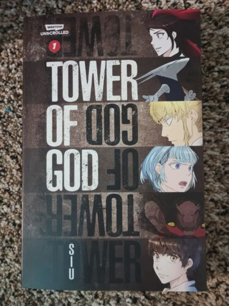

My Favourite Manga
-
After God
Description
Japan has been invaded by Gods, leaving giant Danger Zones where once were cityscapes. While patrolling the area, Anti-God researcher Tokinaga discovers Kamikura Waka looking forlornly through the protective fence. In her eyes, he spots something deep and dangerous. Something capable of changing the world...
-
Tower of God
Description
Reach the top, and everything will be yours. At the top of the tower exists everything in this world, and all of it can be yours. You can become a god. This is the story of the beginning and the end of Rachel, the girl who climbed the tower so she could see the stars, and Bam, the boy who needed nothing but her.